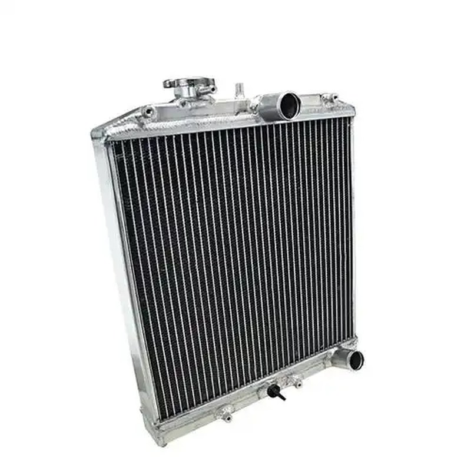

49110CB000 is the original-equipment reference for this nissan power steering pump vq40de – replaces 49110-ea200 / 491109ca0a / 49110-zl. Importers and repair chains source it from KingMay in mixed container loads, alongside other cooling system components. Check the tables below to confirm vehicle coverage.
OE 49110CB000 is a Nissan Power Steering Pump VQ40DE – Replaces 49110-EA200 / 491109CA0A / 49110-ZL for Hyundai / Kia vehicles, stocked and exported wholesale by KingMay Auto Parts (Guangzhou, China). MOQ from 10 pieces, mixed orders welcome, quotations within one business day.
How 49110CB000 decodes in the Hyundai-Kia catalog system. The prefix identifies the component family; the suffix carries model and variant information.
| Field | Value |
|---|---|
| Full reference | 49110CB000 |
| Normalized (no hyphen) | 49110CB000 |
| Prefix (family code) | 49110 |
| Prefix maps to | Nissan Power Steering Pump VQ40DE – Replaces 49110-EA200 / 491109CA0A / 49110-ZL (this reference) |
| References sharing prefix 49110 | 1 in KingMay catalog |
| Numbering family | Hyundai-Kia 5+5 format |

Other part numbers frequently ordered together with 49110CB000 by wholesale clients.
| OE Number | Component |
|---|---|
| 491109CA0A | Nissan Power Steering Pump VQ40DE – Replaces 49110-EA200 / 4 |
| 49110PW20A | Nissan Power Steering Pump VQ40DE – Replaces 49110-EA200 / 4 |
| 0002003822 | Fan Clutch for MERCEDES-BENZ SPRINTER 2-t Bus (B901, B902), |
| 0002005822 | Fan Clutch for MERCEDES-BENZ SPRINTER 2-t Bus (B901, B902) |
| 0002006323 | Fan Clutch for MERCEDES-BENZ VALENTE Bus (W639), VITO / MIXT |
| 0002007223 | Fan Clutch for MERCEDES-BENZ VALENTE Bus (W639), VITO / MIXT |
| 0002007323 | Radiator Fan for |
| 0002009623 | Radiator Fan for MERCEDES-BENZ SPRINTER, VW CRAFTER |
References that share the 49110 family prefix with 49110CB000. In the Hyundai-Kia numbering system the leading five digits identify the component family, so these numbers usually belong to the same assembly group and are ordered together by distributors building a consolidated shipment. Always confirm the variant suffix, connector layout and dimensions before substituting one reference for another.
Other part numbers in the cooling system group that wholesale clients order alongside OE 49110CB000. Grouping mixed references into one shipment is how most importers reach full-container freight thresholds.
Browse all 1,169 Cooling System OE references → · ← Previous in Cooling System · Next in Cooling System →
| Item | Detail |
|---|---|
| Export packing | Neutral carton, inner foam protection; custom labels on request |
| Lead time | 7 working days (stock) · 25-35 days (production run) |
| Shipping terms | FOB Guangzhou / Shenzhen; CIF & DDP negotiable |
| Payment | T/T, LC at sight for contracts; sample orders by T/T |
| QC documentation | Packing list + photo report + dimension check per shipment |
The questions below are the ones buyers raise most often about OE 49110CB000 — fitment, fault symptoms, cross-references, pricing and export terms. Each answer is written to be quotable on its own.
Every shipment of 49110CB000 leaves with a packing list, photo documentation and a QC report. Warranty terms are agreed per contract and reference that inspection record; claims are settled in writing against the documentation.
Aftermarket nissan power steering pump vq40de – replaces 49110-ea200 / 491109ca0a / 49110-zl comes from tooling houses that hold the original drawings or licensed equivalents. KingMay sources from vetted factories and inspects each batch; the manufacturer name is available on request where your market requires origin documentation.
OEM means the part was produced for the vehicle maker's assembly line; aftermarket means it is made independently to the same engineering drawing. For a nissan power steering pump vq40de – replaces 49110-ea200 / 491109ca0a / 49110-zl the practical gap is usually tooling age and packaging rather than fit, provided the tolerance class matches.
Treat it as a wear item: inspect every 20,000-30,000 km and replace at the first sign of leakage, noise or performance loss. Real service life swings widely with climate, road surface and duty cycle, so mileage on its own is a weak indicator.
Stock references leave Guangzhou within 7 working days. If 49110CB000 needs a production run, allow 25-35 days depending on quantity and surface treatment. The schedule is confirmed in writing when the order is placed.
Four variables explain most of the spread: material grade, whether the goods are new production or clearance stock, packing format, and whether the quote is ex-works or landed. Ask for the material certificate alongside the price — that is what makes a comparison like-for-like.
Buyers searching for OE 49110CB000 most often land on these pages next.
Send your 49110CB000 requirement and destination port to our export desk for a landed-cost estimate. All 49110CB000 shipments leave with a packing list, photo documentation and QC report. Combined orders with other Hyundai-Kia references can share one container to cut landed cost. Payment terms are negotiable for established distributors; first-time buyers are welcome to start with a sample lot.
Send quantity + destination port. Quotations typically return within one business day.